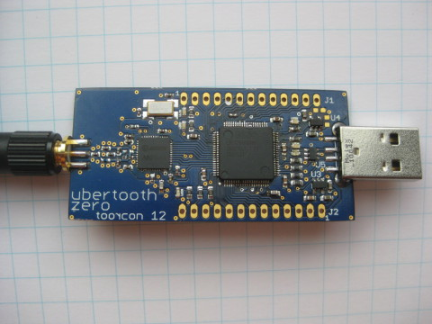

Ubertooth Zero¶
Ubertooth Zero was the first working prototype hardware platform of Project Ubertooth. It has been superseded by Ubertooth One.
Architecture¶
Features¶
- 2.4 GHz transmit and receive.
- Transmit power and receive sensitivity comparable to a Class 3 Bluetooth device.
- Non-standard JTAG connector.
- In-System Programming (ISP) serial connector.
- Expansion connector: intended for inter-Ubertooth communication or other future uses.
- Six indicator LEDs.
Design¶
Ubertooth Zero was designed in CadSoft EAGLE with surface mount components suitable for reflow.
Demonstration¶
Michael Ossmann presented Ubertooth Zero, a preview (video: part 1, part 2) at ToorCon 12 in October, 2010.